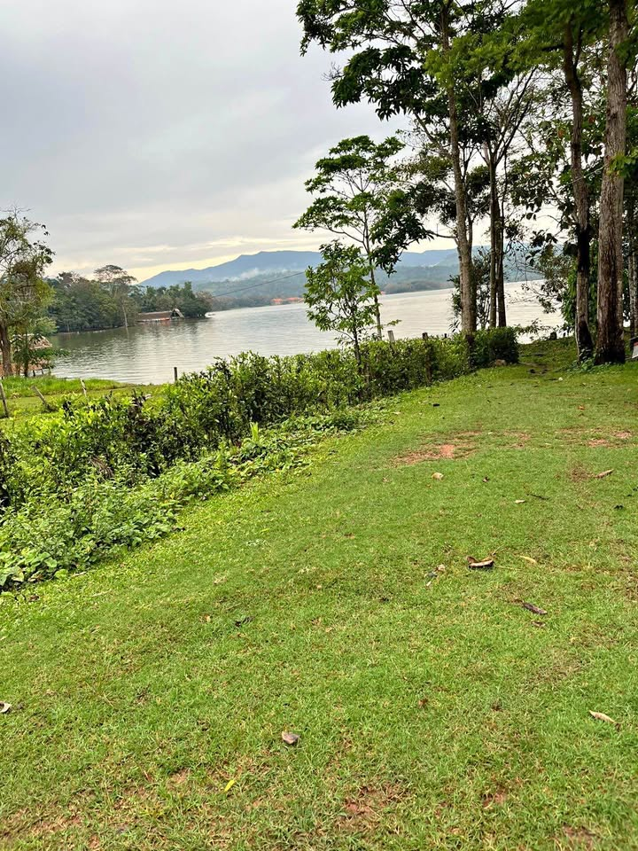

PEN34 2.542 ha

📍 Terreno urbano en Sauce, San Martín 📐 Área: 254.23 m² 🏡 Totalmente cercado 📄 Independizado e inscrito en Registros Públicos ✅ Sin cargas ni gravámenes ⚡ Agua y 💧 luz disponibles a pocos metros 🛣️ A solo 70 metros de la carretera principal 🌊 A solo 100 metros (2 minutos caminando) de la Laguna Azul de Sauce 🦋 A 50 metros del futuro mariposario y orquidiario. Ideal para: ✨ Casa de campo ✨ Airbnb o bungalows ✨ Hospedaje turístico ✨ Inversión inmobiliaria con gran potencial de crecimiento Inversión: 34 mil dólares NEGOCIABLE